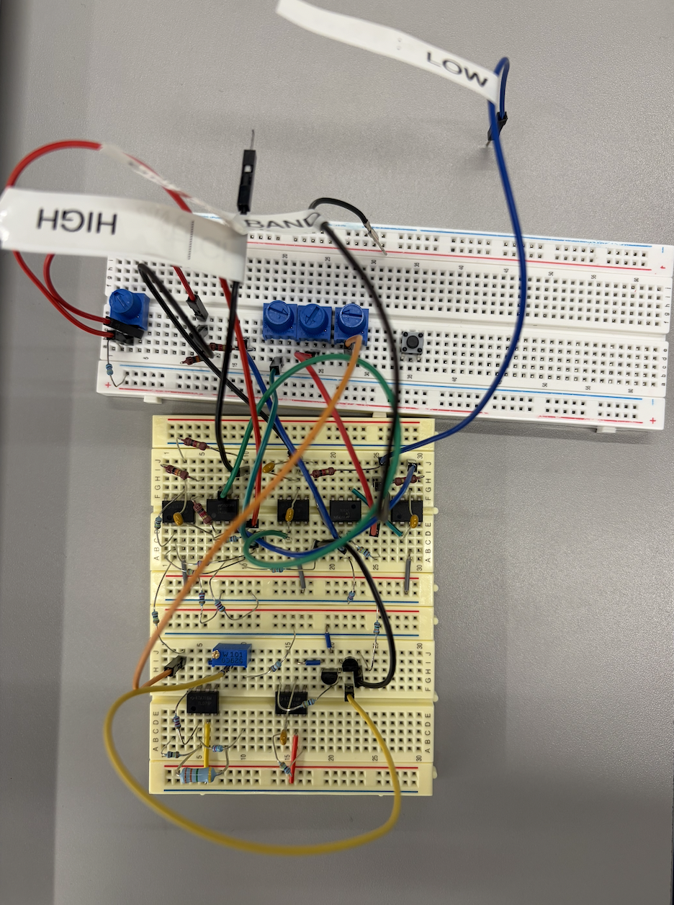
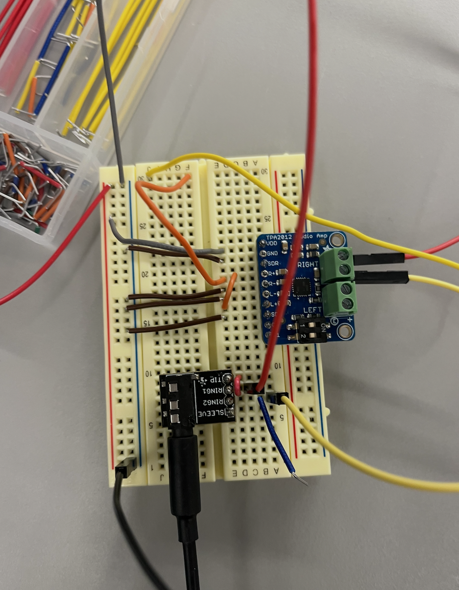
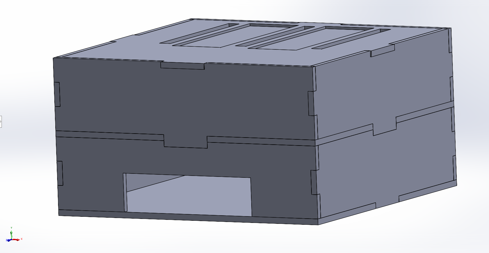
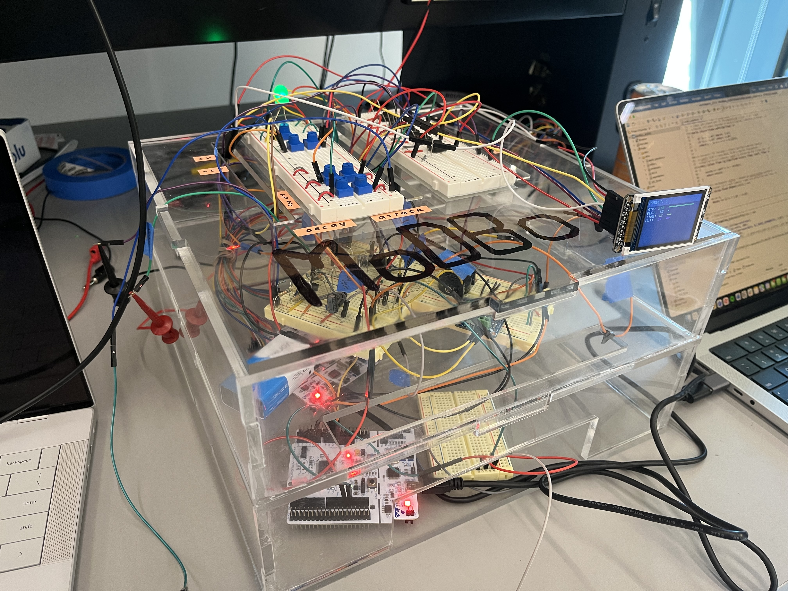
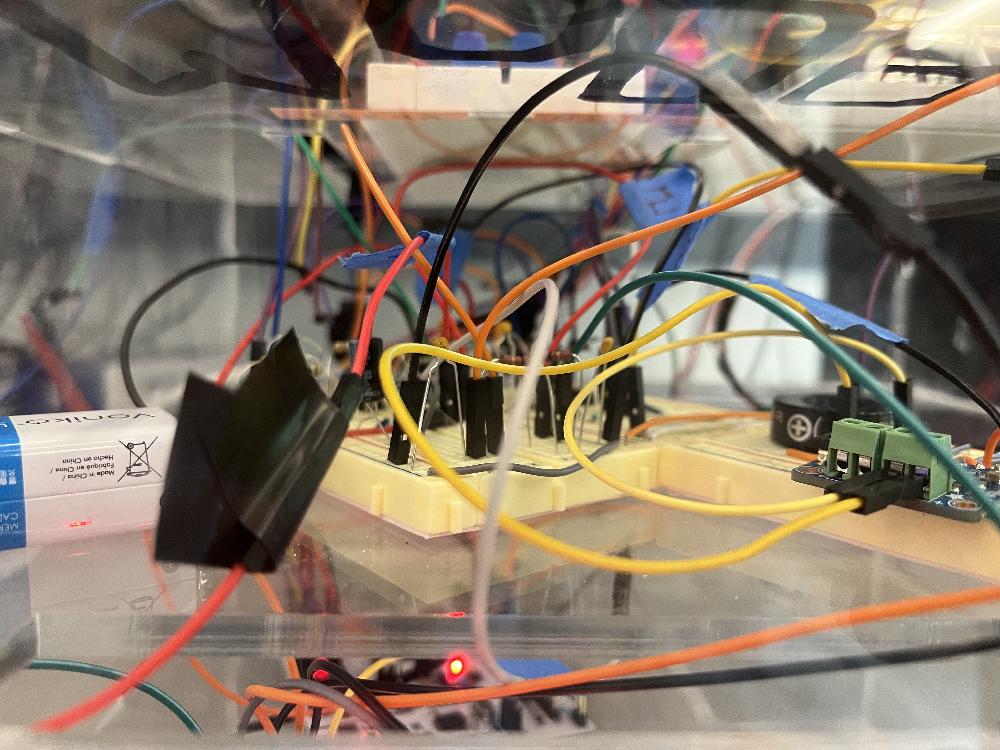
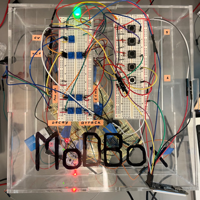
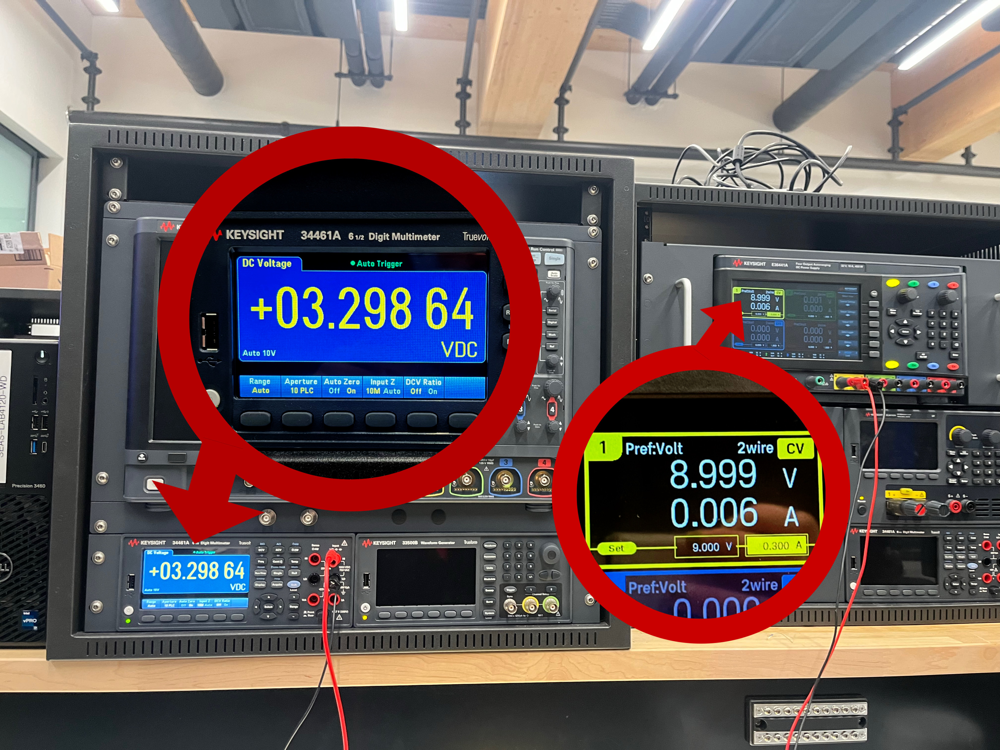

ESE 3500 — Final Project — University of Pennsylvania
Embedded Modular Synthesizer
Bhavya Surapaneni · Sarah Liao · Mary Mbuzi · Katya Mazurenko
A fully embedded modular synthesizer combining analog signal processing with digital firmware, built around two STM32 Nucleos, custom analog modules, and a laser-cut, clear form factor.
Video Demo: Design process & UI walkthrough






ADC Input - we use the ADC input pins to track the potentiometer-based voltage divider output (the user’s control knobs).
Interrupts - we use interrupts to track the user’s button presses when they want to switch modes or routing.
UART Communication between MCUs - The two STM32 nucleos communicate with each other via UART. One MCU processes and tracks the user input and modes of operation and sends them to the second MCU via UART
PWM Output - We generate a PWM output using a timer to generate one of match the VCO's output signal.
Signal routing - Module routing requires a specific sequence of events: the oscillator produces the periodic waveform, the different modules (digital and analog) shape the tone of sound, and the analog amplifier is the final stage before the speaker. Because of this, we route our input signal through the STM32 so that it can apply / route to modules.
Envelope Generator - The envelope generator is one of our digital modules. We digitally envelope our signal to change our sound signal over time based on knob input.
LCD screen - we use SPI to control an LCD screen that display's the user's selected sound modes.
Echo Module - we have a digital module that add an echo to our sound.
In this demo you can see our two MCUs communicating via UART. One MCU is tracking input ADC values and button interrupts and send all updates to the second MCU which implements those changes. In the video, you can see the ADC values being read out as Sarah adjusts the potentiometer knobs.
STM32 Nucleo - We worked with two STM32 Nucleos, one for handling user input and one for routing and generating the sound signal based on the user's actions.
Digital User Interface - 5 push buttons representing an input type switch option and 4 presets and 5 potentiometers controlling the envelope and the VCO.
Voltage Controlled Oscillator (VCO) - the voltage controlled oscillator is an analog oscillator that outputs either a triangle waveform or a square waveform determined by V_expo (ADC output, between 0 and 3.3V). It is built with Detkin resistors, capacitors, LM358 Op Amps, and BC548 BJTs.
Voltage Controlled Filter (VCF) - One of our modules is a Voltage controlled low pass filter. By turning the potentiometer knobs, the user can adjust the gain and cutoff frequency of the amplifier.
Output Stage - We use a TPA2012 Amplifier to drive our output signal through the speaker. Our output speaker (TBD) is an 8Ohm Speaker so it requires a very low output impedance from the amplifier to achieve maximum output. We used the control switches on the amplifier to give our signal a gain of 6dB so we could hear it clearly. We use 3.3V to power the amplifier and ground the SDL pin to turn off the left output.
Voltage Regulator (LDO) - We use a LM1086 LDO to step down our 9V to ~3.3V so that it is safe to be imputed into our MCU.

The input voltage (9V) is on the yellow power supply, the shifted output signal (3.3V) is on the multimeter.
This video demonstrates the speaker producing sound and its gain being varied by the switches on the speaker amplifier.
With the analog side of our project, we faced major challenges with noise and impedance transfer. A lot of times our circuits worked fine on their own, but would stop functioning upon integration with the rest of the build. We had to play around a lot with filters and buffers, and not everything worked in the end. As a result, we are super proud of our modules that do successfully produce sound, whether through analog or digital routing. It was no easy feat!
For me, working on ModBox was simultaneously one of the most difficult and one of the coolest experiences during my time at Penn. I've worked on complex, multi-part projects before in other classes and at internships, but it was a whole new beast to tackle designing an embedded project, proposing it and adapting it based on feedback, and then starting completely from scratch and getting it done in an incredibly short time-frame. Embedded is uniquely difficult because you have bugs both in hardware and software, which was multiplied by the fact that this was not a project that we knew would work, like the labs. Despite all the challenges, I am truly floored by how much I have learned in the past couple weeks. Struggling through setting up STM32s, learning the registers, driver syntax, and repository structure, and learning to use the Cube IDE was time-consuming but worth it, since I hope to do further projects with STM32s and now understand how they work intimately. I focused a lot on the code for the digital components and communication between parts, as well as the integration of all the analog modules with everything going on digitally with our two STM32s, and I remember feeling so overwhelmed when starting to code since there were so many moving parts. I initially wrote all the code in one project folder, then realized I needed to move everything for the audio STM to another project, which required figuring out just how STM projects compile with .proj files and making sure everything stayed together. We used STM CubeMX to generate our drivers and initially set our pins, since it was easy to tell what pins had what functionality, but then we also realized the caveats of CubeMX and how you had to leave your code in a certain structure so MX could regenerate files based on what pins you set. We pivoted away from this, setting everything in code, but it was definitely a learning experience when some of our code in main.c deleted when we ran CubeMX and changed pins. In general, we had a lot of times when things went wrong and we had to change the way we were doing things, but we really did learn by doing and pick up so much along the way. I got very comfortable with understanding STM pins and figuring out what needed to go where, and developed a coding style that worked well for me and for our project. I also got to assemble a lot of the final form factor, reorganizing our many breadboards and STMs, and it was cool to see everything come together. A general theme of our project was realizing just how much goes into integration and how even if you have all your analog and digital parts working and unproblematic in theory, when you try to bring every thing together, you will undoubtedly have issues. I realized that this was the most stressful part, but also taught me a lot about how MCUs work on a deeper basis and how when you are running so many different processes on them, you really need to understand what those processes are doing so you can prioritize certain things and make sure you have enough compute power and clock speed to do those things. I feel like I really started to enjoy embedded systems in a way I hadn't before because we had so much control over what we were doing and, thankfully, were able to reap the fruits of our labor when a project we completely conceptualized and executed actually worked. It was really exciting, and I made a lot of memories and friendships from working on this project that I will cherish!
Working on this project was definitely a love-hate relationship. However, after consistent late nights and hours of debugging, I can't deny that I learned so much and I'm proud of the final product we were able to achieve. I got to work on both the analog and digital parts of this project. I was able to apply my analog knowledge from other classes to design a VCO and VCF, but I didn't expect how tricky it would be to integrate it with the STMs. Something we struggled a lot with was how much we were trying to do at the same time, so knowing what to prioritize (TIMER, UART, ADC, SPI etc.) was super important. It was especially frustrating when something would work well, but when attempting to add a new feature, everything starts to breakdown and not knowing what is exactly causing the bug. Using the STMs was definitly a learning curve with the different pin set up, UI, file structure, and creating new drivers. Something that I wished we had done differently was start integration between the analog and digital much earlier. We didn't really start integrating until the week of MVP demo day, so a lot of issues that we didn't even consider didn't exist until pretty close to the due date of the project. I learned that planning and setting small goals throughout the project is so crucial, especially with a tight deadline. Also, commiting often and saving old files is so so so important! Sometimes, we'd attempt to fix a bug but it would end up causing more bugs so having old versions that worked better were life savers in case things didn't work out. Overall, I'm glad that this project really forced me to understand the details of embedded systems and bare metal programming. It opened my eyes to the possibilities that embedded offers that I didn't consider before. I'm incredibly proud of what we were able to accomplish and although all nighters aren't the most enjoyable, I'm glad I was able to spend them with some incredible people and work on such a cool project.
Working on ModBox was a challenging and rewarding experience of my time in ESE 3500. The project had its bumps, I designed a filter for our original Max4466 mic only to find the signal was still too noisy, which led me to swap to a different mic entirely, that was the Max9814 mic. That whole process taught me more about signal quality and practical circuit troubleshooting. I also attempted to build an oscillator from scratch that didn't work when tested, which, while frustrating, taught me just how sensitive analog circuits are to component tolerances. On top of that, I helped assemble the physical enclosure that houses everything, which made the project feel like a real finished instrument rather than a breadboard prototype. What I'm most proud of is how the full system came together, the analog modules, the STM32-driven control interface, and the physical box all working in concert as something you could actually play. If I could do anything differently, I would have evaluated the microphone hardware much earlier to avoid investing time in a filter that ultimately couldn't fix the problem. The next step for this project would be revisiting the oscillator design, refining the microphone input for cleaner live audio, and expanding the module library to give the synthesizer even more ways to shape and transform sound.
During this project, the newest thing I challenged myself to learn was how to design, CAD, and laser cut our box. Bhavya and two of my MEAM friends were very helpful throughout the process and I couldn’t have done it without them! I feel that learning this skill will open a lot of new opportunities for me to prototype or explore more versatile paths. I also worked on designing two analog modules that were unfortunately not implemented due to them not working reliably by the time necessary. One was a Voltage Controlled Amplifier (VCA)- At the time, we were having issues with our TPA2012 providing too much gain and our output being very loud. As a result, it led us to consider building a VCA that could reduce the gain on our signal. Due to lack of documentation, I decided to design one myself by making a CD amplifier with a transistor in the deep triode region as a load (using a boost converter to operate the triode-transistor). I was able to vary the gain by varying the input voltage to the boost converter when we used the frequency generator as input, but unfortunately it failed when we routed the actual signal as input from the VCO. Also, because human hearing is on the decibel scale, it was difficult to discern the changes in sound amplitude that we could see on the oscilloscope, so the amplifier was pretty pointless from a user perspective. Still, I was super proud of myself that I managed to theorize and design something successfully based on previous coursework. I also worked on selecting the parts for the output & microphone stage. While looking at different output and input amps, I did some research into I2S as STM was heavily recommended to us because of it. Plus I got far more comfortable reading and comparing datasheets of different parts to decide what was best for us. Lastly, while I was not the main person working on code, I still got to strengthen a lot of the core concepts we learned in class- timers, interrupts, serial communication, and ADC- by seeing them applied to a new controller.
We originally chose STMs as our MCU for their I2S capabilities, but we really struggled with the implementation and eventually had to give up for the sake of our MVP Demo. Despite the switch up, we were able to successfully implement UART communication instead of I2S on top of learning how to use a completely new MCU.